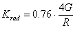

Interface attributes
The Interface
attributes dialog appears by right-clicking on Boundary in the
model
tree and selecting Interface attributes. This context sensitive menu is only
available when the model is meshed.
The dialog provides
information about the interface stiffness representing the surrounding rock. For
zoom-in analysis the
boundary of the zoom-in model is lined with interface elements.
These attributes
consist of the following items:
|
On
|
To toggle on or off interface elements on the
boundary
|
When interface elements are activated, two options becomes
available to define the interface stiffness:
|
Default
|
To use numerically infinite stiffness to the
interface. |
|
User defined |
To define the interface stiffness by the user. There are two option:
This option is the corrected sphere approach which is based on an
equivalent average stiffness:
 
With,
G = Homogenized shear modulus
R = half dimension zoom-in box
This option gives the best results in a
zoom-in analysis.
With this option the user defines the normal and shear stiffness
of the interface elements by typing in the values.
|